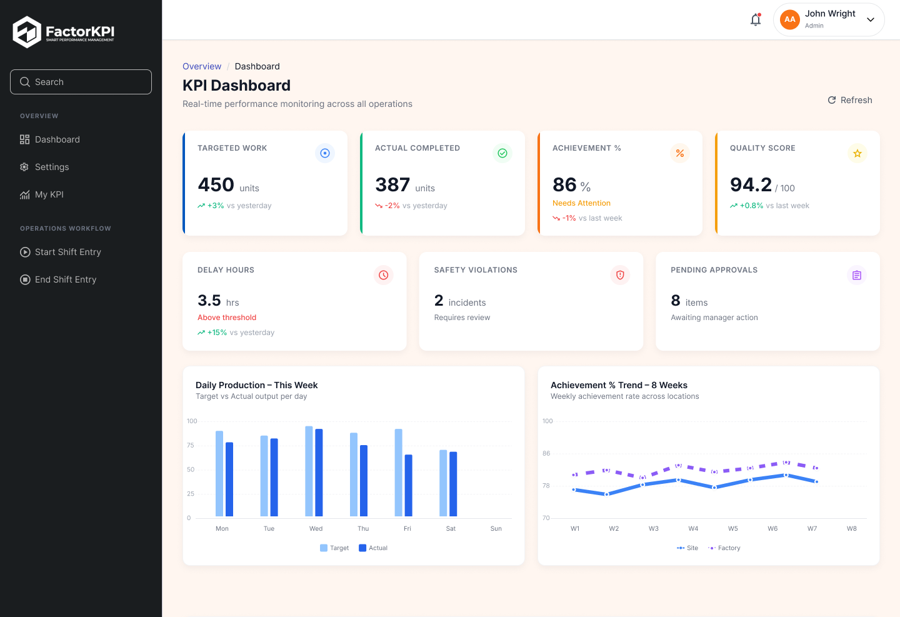

One platform to measure, manage, and improve performance
Connect KPIs, daily operations, employee tasks, production data, and reporting in one place. FactorKPI gives your team real-time visibility into what is happening, what needs attention, and where performance can improve.
FactorKPI Command Center
Site #04 - Eastern Assembly- Pre-shift safety check
- Calibration on line 3
- QA Sample collection
From daily work to measurable performance
FactorKPI connects everyday operations with the KPIs that matter, giving teams a continuous performance management cycle.
Assign
Managers assign tasks, targets, responsibilities, and operational activities.
Capture
Employees submit progress, production data, photos, evidence, and work updates.
Review
Managers validate work, approve submissions, and identify operational issues.
Measure
FactorKPI automatically updates KPI scores, achievements, dashboards, and reports.
Improve
Use performance insights to improve productivity, accountability, and operational efficiency.
Everything your team needs to manage performance
Replace disconnected spreadsheets, manual reporting, and fragmented workflows with one connected operational performance system.
Stop building reports manually
Generate structured KPI and operational reports automatically using real-time data.
Turn goals into measurable KPIs
Create KPIs, define targets, assign ownership, set scoring rules, and monitor achievement from one system.
Connect daily work with performance
Assign tasks, capture progress, review submissions, approve work, and connect activities directly to employee performance.
Track shifts & production targets
Capture daily production, output, rejects, delays, downtime, and operational performance.
Defect Rate Tolerance
KPI Weight: 35%Turn business goals into measurable performance
Create structured KPIs for companies, departments, teams, or individual employees. Define exactly how performance is calculated and see progress automatically as operational data is submitted.
Flexible KPI Setup
Create custom KPIs, targets, weights, frequencies, and scoring rules.
Automated Scoring
Automatically calculate performance based on submitted and approved data.
Clear Ownership
Assign every KPI to the responsible person, team, department, or location.
Performance History
Compare current results with historical trends and previous periods.
Make daily operations part of your performance system
FactorKPI connects tasks, shifts, production activities, inspections, incidents, and operational updates with measurable performance outcomes.
Task Assignments
Assign daily, recurring, or one-time work to individuals and teams.
Work Progress
Employees submit status updates, notes, photos, documents, or production data.
Manager Review
Review submissions, provide feedback, approve work, or request corrections.
Operational History
Maintain a searchable record of completed work, updates, approvals, and performance.
Live Operations Flow
Task Assigned
Quality checklist for Batch #409
Employee Update
All standard gauges checked & verified
Evidence Uploaded
Calibration_Report.pdf
Manager Review
PendingApproved by Shift Lead Marcus
Know exactly where performance stands
Turn operational activity into clear dashboards and reports for faster, more informed decisions.
Site OEE Rankings
Compare all facilitiesExecutive Overview
See company-wide performance at a glance with roll-up metrics.
Operational Analytics
Identify bottlenecks, delays, and underperformance in real-time.
Automated Reports
Generate daily, weekly, and monthly summaries instantly to PDF.
Drill-Down Insights
Move from company-level KPIs down to sites, lines, and shifts.
Keep employees connected wherever work happens
Employees don't need to sit behind a desk to participate in performance management. FactorKPI lets frontline teams submit work, capture evidence, check assignments, and monitor personal performance from mobile devices.
Daily Task Assignments
See today's tasks, targets, and priorities clearly on shift start.
Progress & Evidence
Submit updates, notes, photos, and supporting files directly from the floor.
Fast Approvals
Managers can review operational updates and sign-off quickly.
Personal KPI View
Employees can see their own targets, scores, and performance history.
Manage performance across teams, factories, and sites
Standardize KPI measurement across your organization while allowing every site, department, and team to manage its own operational data.
Multi-Site Operations Panel
Standardized enterprise roll-up| Location | Performance Score | Production Target | Task Completion | KPI Achievement | Safety Incidents |
|---|---|---|---|---|---|
| Factory A - Detroit | 92.4% | 98% (124/126) | 91.2% | 0 | |
| Factory B - Munich | 88.7% | 94% (90/96) | 88.5% | 0 | |
| Factory C - Shanghai | 76.3% | 82% (74/90) | 78.1% | 1 | |
| Warehouse - Austin | 94.1% | 100% (45/45) | 95.0% | 0 |
Use consistent performance standards across locations to ensure fair comparison and objective data alignment.
Quickly identify top-performing and underperforming locations to replicate success models and direct resources efficiently.
Executives get organization-wide visibility while local site managers maintain localized daily configurations.
The right information for everyone
Executives: See the organization
Understand company-wide performance, compare locations, identify risks, and monitor strategic KPIs.
Managers: Manage execution
Assign work, track teams, review operational updates, and act quickly when performance moves off target.
Employees: Your contribution
See assignments, targets, KPI performance, feedback, and work history from one clear interface.
Less manual tracking. More operational control.
Real-Time Visibility
Know how teams and operations are performing without waiting for reports. Get automatic updates on active lines.
Greater Accountability
Make responsibilities, targets, tasks, and outcomes clear. Ensure all shift handoffs are tracked and signed off.
Faster Decisions
Spot problems and performance gaps before they become bigger issues. Get alerted immediately on critical delays.
Continuous Improvement
Use historical performance data to improve processes, optimize schedules, and enhance overall worker productivity.
See FactorKPI in action
Explore how dashboards, KPIs, workflows, reporting, and employee operations work together in one platform.

Questions about FactorKPI solutions
FactorKPI is designed for manufacturing companies, factories, industrial operations, shift-based teams, multi-site organizations, and other businesses that need structured performance management.
Yes. FactorKPI is built to support your custom shift schedules, KPI weights, formulas, inspection checklists, and approval hierarchies without forcing a rigid workflow.
Absolutely. FactorKPI provides multi-site rollups for executives while allowing each plant, line, or site manager to maintain localized targets, operators, and daily reporting.
Yes. FactorKPI bridges machine outputs and frontline human tasks, connecting shift handoffs, quality checks, and equipment downtime with individual and team KPI scoring.
Yes. Frontline workers access mobile-friendly interfaces to view shift targets, submit progress, upload photo evidence, and log downtime in seconds.
Yes. Role-based access ensures executives see high-level cross-site comparisons and OEE trends, while managers see real-time line telemetry, task queues, and shift handoffs.